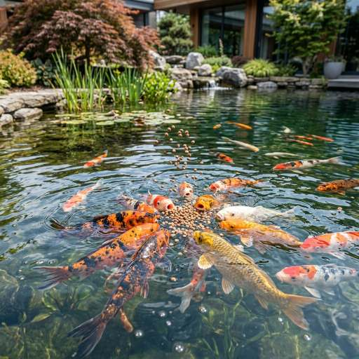
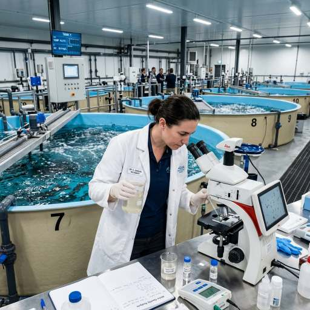
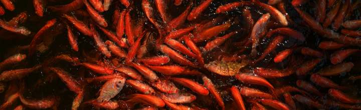

Our Specialized Range
Scientifically formulated animal health products to ensure aquaculture productivity and sustainable fish farming.

Aqua-Grow
Advanced growth-promoting formula containing balanced micro-nutrients and essential vitamins to accelerate fish weight gain and improve feed utilization.
- Boosts daily weight gain
- Improves feed conversion (FCR)
- Stimulates healthy appetite

Bio-Shield
A premium immunostimulant enriched with beta-glucans and herbal bio-actives to shield aquaculture species from bacterial, viral, and fungal diseases.
- Triggers non-specific immunity
- Fights common water pathogens
- Strengthens tissue barriers

Aqua-Clean
Biological water conditioner utilizing specialized bacterial strains to degrade organic waste, sludge, and toxic gases like ammonia and hydrogen sulfide.
- Neutralizes ammonia & nitrites
- Degrades pond sludge naturally
- Stabilizes phytoplankton bloom

Aqua-Digest
Multi-enzyme feed additive fortified with gut probiotics to optimize protein digestion, maximize nutrient absorption, and maintain a healthy gut microbiota.
- Boosts protein digestibility
- Inhibits toxic gut bacteria
- Prevents shrimp white gut
Stress-Nil
Electrolyte and Vitamin C formulation designed to reduce stress caused by transportation, high stocking densities, water parameters fluctuation, and handling.
- Prevents osmotic stress shock
- Limits transport mortality
- Fortified with stable Vitamin C
Oxy-Max
Emergency oxygen release powder that rapidly elevates dissolved oxygen levels in pond water, rescuing fish from severe respiratory stress and suffocation.
- Instant dissolved oxygen release
- Prevents morning hypoxia loss
- Oxidizes toxic bottom nitrites